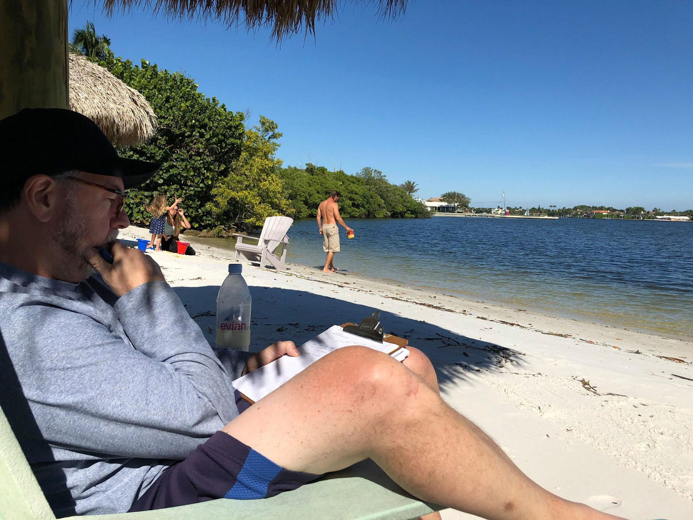
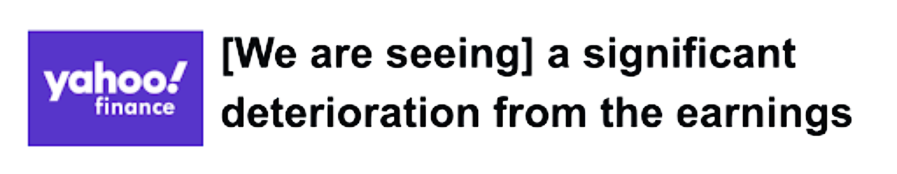
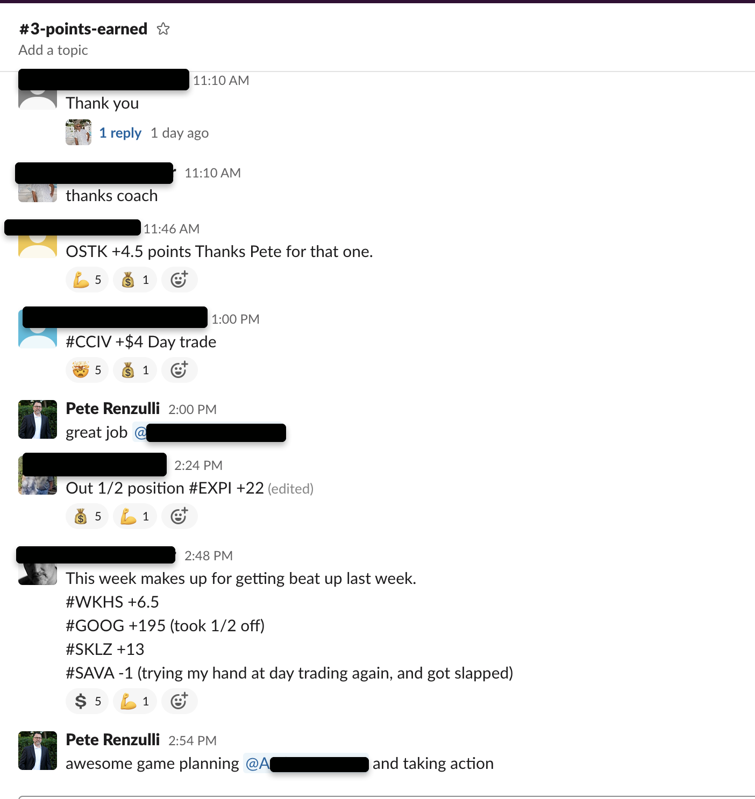
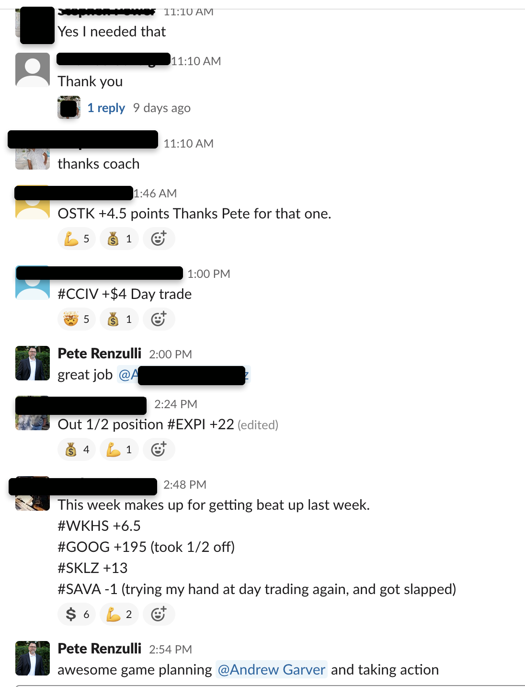
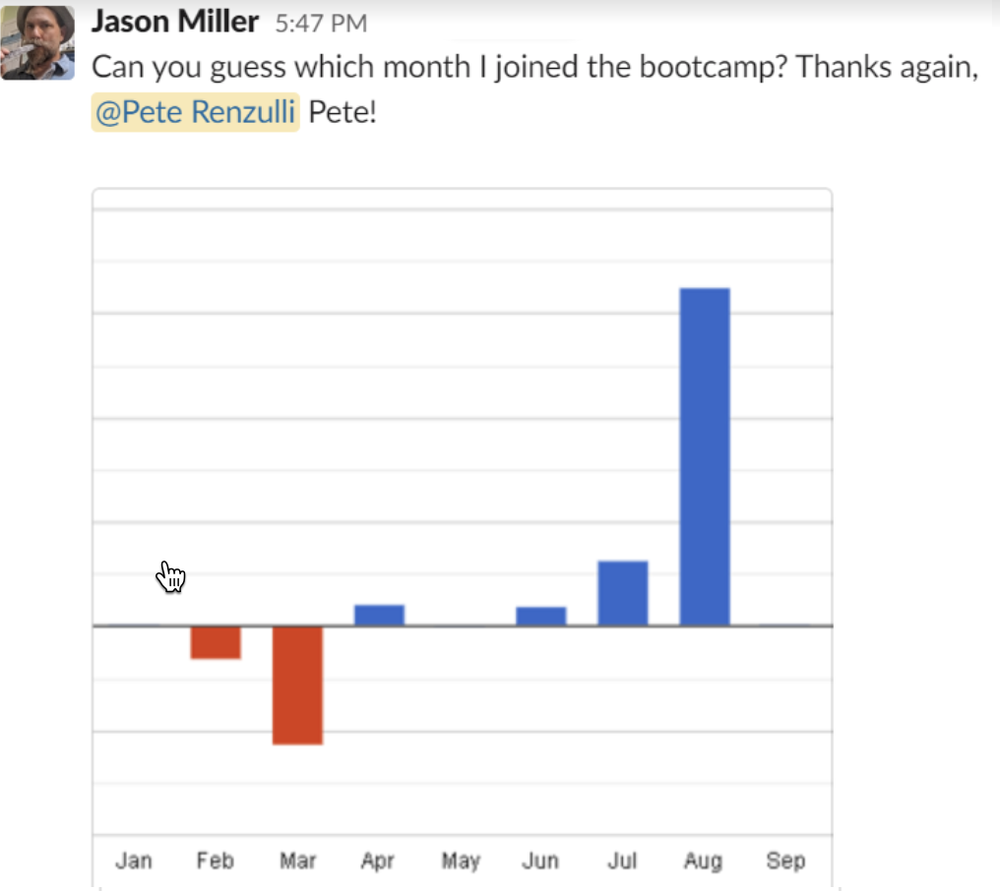

Find Out How This Elite Team Of Traders Are Using These...97-Year-Old Stock Exchange SecretsTo Pull Gains Of Up To 5.3%, 21% And Even Up To 30.86% and More From The Stock MarketOn A Daily & Weekly Basis.And how you can become one of them today
Hi, I’m John, from Stock Traders Pro,
What you're about to see will never be shown on CNN, CNBC, Fox, or any other major news network...
It’s a coveted 3 step system developed by this former Wall Street trader -- Pete Renzulli...
And if you stick with me for the next few minutes…
You’ll have the opportunity to take advantage of this system -- starting today.
A system Pete has been showing to average at-home traders…
Allowing them the opportunity to find predictable winners every single day.
For instance…
When Mark stumbled on to Pete’s coveted methods…
He said…
“My weekly goal was $1000, yesterday I made $7500 on 2 trades.I hear your voice in the back of my head.The first trade I got in there was an obvious exit, it was at $2600, then the swing low | got in and I'm up to $2000, $3000. I wanted to get out because of the dollar amount but I hear your in the back of my head that there's no reason to get out, I'm not seeing any exit signals. So I kept waiting and it turned into a $5000 and change trade.”
And Tom, who said he’s made an incredible "$20k+ in 2 days."
“$20k+ in 2 daysI know the market has been very volatile and like you said, if you haven't been making money the last few months, you're doing something wrong and need to get in the program. I'm so unbelievably happy I did.
Yesterday was the first day my account was positive in the 3 months I've been trading. I started yesterday at 42k, went up 10% yesterday.closed at 47k. Today another 25%, it just hit 62.5k. 15k just today.
I'm honestly almost in shock, I really can't begin to explain my appreciation for all the help and knowledge.”
And Many Who’ve Used This System Have Barely Needed More Than $8k To Start…
Like Marco, who says he "started with 8k at the beginning of November"…
And about 1 month later on December 10th…
Marco said he’s "at 18k now all thanks to [Pete’s] insights".
That’s more thanDOUBLE than what he started with-- And in just one month!
And just like the rest of the people who learn Pete’s coveted secrets…
There’s no need for any fancy software…
No need to learn any confusing or boring indicators.
And no need to spend your entire day doing mind-numbing research.
In fact…
All you need to get started…
Is a regular trading account…
A basic laptop or computer - like the one you’re probably on now…
And a "keen desire to learn" Pete’s 3 coveted secrets for becoming a consistent trader.
Secrets Pete is so confident in...
Back when Pete was funding new traders for his secret Wall Street Trading firm...
Pete says:
“I could take just about any trader right off the streets...
It didn’t matter what this trader’s experience or education level was...
But, as long as they truly had the desire to learn and use my 3 coveted secrets….
This new trader would get access to my account…
Worth MILLIONS of dollars...
Which gave them the chance to profitably trade millions of shares every month in my name.”
Pete’s trading firm days are now behind him…
So, he’s taking his knowledge and using it to help stay at home traders, break out of the rat race… Once and for all.
And here’s the thing…
You don’t have o be a fancy hedge fund manager…
Or have a Masters in finance…
And you definitely don’t need years of experience to use Pete’s system.
Pete Himself Is A College Drop Out!
So As He Says, "If I Can Learn It, So Can You".
That’s why these same secrets are helping ordinary people…
All around the world…
Become pro-level traders…
And helping them find predictable winners.
Trading from their own regular accounts…
All in the comfort of their home.
And the best part is…
You won’t have to sit hunched over for HOURS and HOURS each day…
Bashing your head against the computer…
Trying to analyze complicated charts, indicators, or keep track of the 24/7 news cycle.
No…
Pete advocates you just need to use his "Smart Money Playbook".
This is the blueprint that helps you pinpoint where the big money is going…
So You Can Virtually Predict Every Move
The Smart Money Will Make…And PiggyBack Off Their Trades.
Again this shouldn’t take HOURS on end...
As Pete advocates…
You use the same schedule as he does…
At 7pm, a few hours after the market closes…
He takes about 30 minutes to draft up an easy-to-follow "game plan" for the next day...
All based on the "Smart Money Playbook".
Then 8:30 am just before the markets open…
Grab your morning coffee…
And review your game plan for about 30 minutes.
And..
At least 15 minutes after the NYSE bell rings [at 9:30am]…
Look for an entry using one of his 3 favorite chart patterns….
And place your trade.
Simple; right?
Well, it gets better…
Because instead of searching for risky penny stocks…
Or no named and volatile mid-cap stocks…
The "Smart Money Playbook" Is Designed To Use The Same Stocks Day In And Day Out.
We're talking about big everyday stocks…
Tech Stocks Like Apple…
Or huge retail stocks like Bed Bath and Beyond...
And the popular entertainment app ROKU...
And many more big stocks like this!
Now get ready...
Because in just a moment...Pete will reveal one of his favorite smart money scans…PLUS 3 of his BEST patterns used to piggyback off Smart Money’s gains…
Right now.
So sit back and enjoy.
Hi, Pete Renzulli here...
And yes…
While I ran 2 successful trading firms…
And my biggest firm: Keystone Trading…
Was in one of the most expensive districts in NYC…
That’s across from Madison Square Garden…
And blocks from the Empire State Building…
Where Rent alone was $16k a month back in the year 2,000...
[which now it’s probably more like $30K].
We had nearly 300 traders hanging on my every word…
And allocating my capital to the markets every day…
Which in total made up over 500 MILLION shares per month.
And with the lowest priced shares I allowed at $10...
That's equivalent to over $5 billion in volume each month.
And at the same time, people begged me to travel…And teach my stock trading secrets…
All over the U.S., the U.K., and Canada.
And while all of this allows me to now live a good life…
With a house on the water...
In one of the richest counties in the U.S.You must remember one thing...
If It Wasn’t For These 3 Secrets
I’m About To Share With You…
I May Have Never Made It Out Of The Back Of My Families Long Island Deli.
See, after dropping out of college to manage the family business...
I spent years getting barked at by old ladies…
Because their turkey was sliced too thick.
While I watched all of my college peers…
Make up to 5x as much as me…
At their entry-level job.
And to add insult to injury...
Back in 1994...
I started out trading on a beeper…
All over the phone in the back of the deli.
And Thanks To My Broker…
And Financial Adviser...
I Felt Like the Worst Trader Alive.
It seemed like no matter what I did…
I always bought at the top...
And sold at the bottom.
And while they collected their FAT commissions…
I sat around pissed off, drenched in bacon grease.
And I Never Dreamed That I Could Help
Everyday At-Home Traders
Make These Kind Of Gains Every Week…
And While I Could Go On Endlessly About
My Community's Success!
Back In The ’90s, My Losses Were A Mile Long…
At least, That Was Until I LearnedThe DIRTY Secret BrokersSTILL Don’t Want You To Know
You see 1996 was the year online computer trading began to explode.
And just like that...
The playing field became level...
Everyone now had access to the same real-time pricing as professional brokers.
And that’s when I learned the dirty little secret brokers still don’t want you to know….
They had NO CLUE what they are doing.And they still don’t...
Not only do they consistently underperform...
You are probably better off letting your CAT randomly pick stocks for you!
As soon as I realized this.
I began asking the right questions…
What chart patterns did the richest traders in history use?
So night after night…
After the deli closed…
I'd go home exhausted…
And I’d sit parked in front of my boxy Apple 2E desktop…
And until the moment I passed out with my face on the keyboard drooling on the desk…
I’d analyze what happened that day…
Where my trades went wrong…
Where my trades went right…
And comparing them to old books and stock charts from the most successful traders alive.
William O'Neil of Investors Business Daily...
Richard Dennis & William Eckhardt from Turtle Traders…
One of my favorites being Jesse Livermore who in 1929 was worth roughly $100 million…[Which in today's dollars roughly equates to $1.5 billion.]
And That’s When I DiscoveredThese 3 Smart Money Chart Patterns
The 1st Smart Money Pattern:
"Inside Candlestick" Chart
It’s called an inside candle because the candle you see here…
It’s “inside” the range of the previous candle…
And this chart you see is a perfect textbook example.
And Here's How My Community
Recently Used It On Kohls To
Gain Up To 34% In 13 Days!
While retailers like Amazon and Walmart were hitting record amounts of sales volume and saw their prices hitting new highs during the 2020 pandemic…
Department stores like Kohl’s were being left for dead.
Even the NASDAQ said:
And worse yet…
Right before this trade…
Kohls had just released its 3rd Earnings Report of the year…
And as everyone could ALREADY see from a mile away…
Profits were down.
And I mean REALLY down…
As yahoo finance reported..

However, my community and I didn’t pay attention to any of that…
Instead…
That week I pointed out the inside candle pattern on the chart…
And said this is the perfect time for an entry.
And at $29.42, my student, Marty F tells in a survey that he got in…
He held through 8 days and 2 bullish gaps…
And wouldn’t you know it…
But the stock kept traveling up…
And Marty closed at $38.50 for a +$9.08 gain per stock.
Now that’s about a 30.86% gain...
And in terms of dollars…30.86% on $1,000 is $308...
On $2,500 that’s about $770 bucks….
On $5,000 that’s a $1540 win.
Now compare that to the S&P which you’d get an average of 10%...
IN A WHOLE YEAR!
Yet his trade on Kohls blew the ENTIRE stock market out of the water…
In about 13 days!
That’s how powerful piggybacking off of the “Smart Money” is!
The 2nd Smart Money Pattern:
Well Bid And Well Offer
So this pattern works for both buyers and sellers.
The key indication you want to see is the classic “break out”
Meaning higher highs if it’s going up…
Or lower lows if it’s going down and you’re shorting.
Here’s how it works...
See that first red arrow…
That’s our first break out…
Simply look for another big candle like the next one you see here...
And that’s our confirmation that this is time for an entry.
Here’s An Example Where My Inner Circle
Had The Chance To Make Up To
$200 In Nearly 30 minutes.
Now, this example is a day trade…
And we are looking at the chart in minutes here.
As you can at the right side of the chart…
We have the first highest high…
Then a second-highest high...
And a third-highest high…
This is great confirmation…
And a great opening...
So in real-time I privately messaged my community saying….
There’s a fantastic opportunity for the stock SFIX.
And one of my community members, Joshua, saw that…
And immediately took action...
Buying at $85 at 10:39.
Barely 30 minutes later, he sold at $87.05.
Giving him a full $200 on that trade…
And here’s the coolest part.
That’s not the only trade Joshua made that day…
He also day traded GME and sold for $1,100...
And JMIA for $400...
And "several other smaller trades ending up with a total gain for that day of [...] $3,600…"
Incredible right!
In just a single day, likely trading with $10k per trade...
He nabbed $3,600 from the market!
Think about it…
That’s about a day's worth of work...
What 9-5 job pays you $450 an hour?
And he made $3,600 in about 5 hours.
The 3rd Smart Money Pattern:
Swing Low/Swing High
What you’re looking for here is a kind of a "bounce" in the stock.
See those three arrows…
The first candle it’s going down…
Then it hits the bottom at the second arrow…
And we have the pull back on the third arrow…
And that…
Is when it swings higher and higher.
Here’s How We Recently Used This To
Squeeze 20% Out Of A “Doomed” Stock
Here, take the stock QuantumScape…
This company has been considered a pioneer in the electric car market…
And they’ve been developing a new “solid-state lithium-ion battery”
And this attracted HUGE investors like Bill Gates and Volkswagen.
But after a DECADE of making promises...
This battery company had some BAD news.
As MSN, Motley Fool, NASDAQ and many more all reported…
After a DECADE of Promises…
They are telling investors to wait 7 more years before their product is even USABLE.
Well as you can guess the stock severely dropped...
As the Fool reported…
So based on this news…
Would you think the stock will continue to go down…
Or will it go back up?
Down… right?
We’ll not according to the “Smart Money Playbook”.
That’s why I went live…
And told my inner circle that we were about to see the Swing Low/Swing High on QuantumScape.
And one of my students, Jared S., told me in a survey he decided to act.
That day he bought QuantumScape...
And sold it 7 days later for a 21% gain.
And that’s not all...
Jared bagged 10% on NCLH...
10% on PLUG…
52% of AAL...
And a whopping 125% on UAL!
And the funny thing is…
When I sent out this survey…
And asked him what trading was like before he started working with me…
He said...
“It was a disaster. I wouldn't call it trading. I would call it gambling. I only traded a handful of times before finding [you] Pete.”
And when I asked how he likes trading now that he follows the Smart Money, he said:
“It's such an "easy" way to make winning trades and come out ahead (if you follow Pete’s systems).”
And even said he’s been recommending this system to his friends and family!
Back In 2000, These Patterns Were
Revolutionary…
These patterns alone...
They helped me move on from managing my family's deli…
To become a VERY profitable at-home trader.
And you can imagine what life was like…
When you’re able to take your girlfriend out whenever you want without having to worry about the price of the bill...
When you could buy gifts for your family whenever you want...
When you could afford to go on spontaneous vacations anywhere in the world...
And best of all, you don't have anyone telling you what to do...
It’s a beautiful place to be.
Eventually, I'd promoted myself as an expert trader.
And started my first trading firm Keystone Trading in one of the most expensive districts in NYC…
Which became one of the most respected proprietary trading firms in the United States.
And humbly, with 175 people looking up to me…
I was the Head Trader and Chief Strategic Officer for my NYC trading desk.
Where I trained everyone from college students to novice traders…
How to profit from swing trade, and day trade...
Using millions of shares every month in the market.
On The Surface, It Seemed Like I Had It All…
BUT There Was Still 1 MAJORProblem With Our Strategy
We had what I now call small profit syndrome.
What this means is…
When my team and I captured a winner…
We’d sell as quickly so we could hold on to gains.
But, this is a double edged sword…
Because as soon as we’d sell…
We’d watch the stock continue to go higher and high.
To the point where we could have made double our money!
And to really rub salt in the wound...
Not only did the team and I miss out on doubling our profits...
But there was also the problem of recognizing when stock just didn't have any fuel left.
We’d be in a trade that seemed like it was going to go to the moon...
But then out of nowhere…
The tides took a turn for the worst.
And by not realizing when to pull back...By not trading with fewer shares…
And by not just walking away from the computer...
The Losses Began To Pile Up.
And even though losses were quick to cut losses...
Combined with the other problem of cutting winners quickly too...
This felt like a painful death by 1,000 paper cuts...
Because it prevented the firm (and my nest egg) from growing.
Before Learning About The
"Smart Money Playbook"...This Happened Year After Year…
Which is why between 1999-2007 I was forced to work….
16hrs a day…
7 days a week.
I’d sit around trying to find the next stock that would work for those patterns…
Testing them out…
Retraining people on what to look for…
I looked at indicators, the news, forums, blogs…
You name it...
We tried it…
Yet we could never figure out how to predict where the Smart Money was going next.
Or when a stock was about to take a bad turn.
And when you have over 100 people…
Depending on you to pay them…
Depending on not only maintaining their lives…
But also help them make a luxurious living…
It’s a terrible position to be in.
But It Turns Out Those Patterns
Weren't The Problem…
I Was Missing One Crucial Piece Of Information...
And I’ll never forget this day… It was 2007 and during the 90-minute market lunch break…
Frustrated at the way things were going...Bobby QuinnI went around the corner to my favorite dive pub Blaggards…
Just to get my head straight.
There I opened up my BlackBerry to take a glance, and the market was at new all-time highs.
When someone who looked like Pat Riley with a fake tan...
“Where did the Dow close?”
I looked up, and I noticed he was wearing the signature blue NYSE jacket...
Turns Out This Was A True
New York Stock Exchange Veteran
Bobby Quinn is his name…
But he said, “everyone on the floor called him ‘Sweaty’.”Art CashinBecause in the late one day 80's he walked onto the floor wearing sweatpants.
And that, “All day long Art Cashin Kept calling for SWEATY on the speaker.
And the name stuck.”
Moments later…
Sweaty begins telling me: Pete, we have this problem...
The N. Y. Stock Exchange...
They Just Changed Their Execution System…
And This Was A HUGEProblem For Specialists And Brokers At The NYSE!
See before January 23rd, 2007...
Everything was done manually...
But since New York Stock Exchange introduced hybrid orders…
And this created virtually unlimited shares through electronic executions.
In other words…
What once was over 5,000 people shouting and screaming BUY and SELL at the top of their lungs…
Became a silent digital flow of automated bids and offers…
All adjusting quotes faster than you can blink.
Before Launching
Computer Execution System
NYSE- January 23, 2007
BEFORE
After Launching
Computer Execution System
NYSE - January 24, 2007
AFTER
And for Sweaty and his crew…
This meant they were out of work.
And Sweaty asked...
“If you give us a good deal, and teach us how to do what we do on computers…
My guys will teach how to use order flow… so you can detect what the Smart Money is up to…
This will help you predict and piggyback off their movement.”
That’s When Sweaty Told Me
About His Secret Strategy
What All Of The NYSE Veterans Do
Is Look At The Stock Specialist
On The Trading Floor
Sweaty continued to explain: Like a King in chess…
The specialist is the most important person on the trading floor.
They would be in control of one stock… like IBM...NIKE…. Apple...
And they processed orders for hundreds of traders.
As a trader, this was highly important…
You HAD to watch what was happening in front of each of the specialist booths.
Because as you watched them…
You were seeing -- before your own eyes and ears, in real-time -- what moves the Smart Money made.
Now, why am I telling you all of this?
Well When You Figured Out
The Smart Money’s Strategy…
You Could Piggy Back Their Movement!
Imagine this: You’re on the exchange floor…
You see the crowd roar right after the morning bell rings...
All rushing in front of stock specialists for APPLE...
Right then, you know you had to get in the front and buy APPLE...
And without even looking at the price…
When you look at the faces around you…
And you saw the indecision in the buyers and sellers…
And hear the excitement die down...
You knew it was time to sell your stocks of APPLE and enjoy your success.
And When You’ve Done This As Long As I Have
You Get To Learn All Of
The Smart Money's Trends And Patterns.
Think about it in terms of a sport like football…
If you are watching...
You can see the other team coordinating together...
And as long as you know what kind of play they are trying to make….
You can counter it with your own move.
And here’s the important part that made this all work…
We had guys all researching the biggest stocks...
And the industry…
And comparing it to the entire market as a whole...
And writing in journals for days, weeks, months, and even years…
Having this information allows you to dial what’s known as “order flow”…
And best predict what the Smart Money could do next.
"Sweaty", I Said, "You’re Not Going To Believe It,
But I Know How We Can Replicate
This On Computers In Seconds!"
His patterns of confirmation…
Were just like the patterns I’d been using…
And what took his men years to research…
I knew how to develop the scanning technology to pull all of this up in seconds.
But the only thing I didn’t have was his “playbook”...
So I invited his men over to my office...
And The Next Thing I Knew I Had
About 25 NYSE Specialists, Clerks, And
Brokers Packed Wall To Wall In My Office.
Sweaty and I worked together day and night perfecting this system online...
And from it…
We developed scans to automatically do the work for you…
To detect where the Smart Money was putting their trades that day.
And we created the "Smart Money PlayBook'.
And once we put it all together, it changed the entire game.
That Year The Firm’s
Business Exploded!
We ended up expanding Keystone Trading to nearly 300 traders allocating my capital to the markets….
We were trading over 500 million shares per month.
And with the lowest priced shares I allowed at $10...
That's equivalent to over $5 billion in volume each month.
All on the back of a system…
That has been secretly passed down in the inner circles of the NYSE…
For over 97 years.
And Word Of Our Proven System
Traveled Fast…
People from around the world we’re begging to learn these secrets.
We were promoted in every state…
Scouting for new talent…
And doing seminars all over the country.
One of my favorite trips was going to Ireland…
But, not just because of all the fun we were having playing the famous K Club golf course on the rolling hills of Ireland…
But because when I walked through their office…
They had notes from the lessons I shared with them…
Laid out wall to wall on every single whiteboard…
That’s when it hit me how life-changing this system could be for people all around the planet.
And Remember: You Don’t Need To Own A Firm
Or A Millions Of Dollar Nest Egg
Or Any Fancy Computers…
Because you can set this stuff up virtually for free on your computer.
Yet, these simple but coveted secrets...
Are the reasons why regular people can trade confidently…
And have conviction behind their ideas.
All and all it lets them pick out a good trading idea from a bad idea…
This is why people are constantly sharing wins like this...
Here Are The 3 Steps To Help
Find And Execute The Same Kind Of
Profitable Trades You’ve Seen Today…
First Step… After The Market Closes...
Go to Finviz.com (a free website)...
Click a few buttons on to plug in one of my proprietary “Smart Money Scans”...
Here’s how one of my favorites look:
Do this and it will help you narrow down the 7,000 stocks in the market....
To 10 stocks which the smart money has been moving.
This takes about 30 minutes.Step 2: When You Wake Up The Next Day…
Before the market opens.
While you're sipping your morning coffee...
Open your trading account.
Plugin your watch list from the night before.
And compare it to the “Smart Money Playbook”...
Which simply means…
You'll look over the “order flow” of the stock from the last year, month, day, and hour.
Here let me put this simply for you:
If you look at an overview of all market sectors…
And all you see is green (meaning the stock is going up)…
Then that means all of the “order flow” -- all of the Smart Money’ trades -- are bullish.
So if the market movers are all buying…
Being a buyer that day lets you piggyback off of their movement.
It’s kind of like they say when you're cutting wood...
Make it easy on yourself and Go with the grain.Step 3: After 9:30 Est, When The Market Opens…
Relax, and let the stocks move for about 15 minutes…
When you see one of the stocks go “green” on the scanner…
Check the stock…
And if you see one of the smart money patterns.
You know that means you could buy-in for potentially lucrative trade.
The longest my community of traders wait is an hour to place the trade.
Swing Low/Swing High
Inside Candlestick
Well Bid And Well Offer
And this is a good time to answer one of the biggest questions people ask:
“Can you trade later into the day with a different stock?”
Yes, but after doing this for 20 years…
This system has proven to work best with the SOLID game plan that was made in just 30 minutes the day before…
And that’s better…
Because why would you want to sit around for an hour on end…
When other people in the community are doing the majority of their trading in the first 60 minutes.
And able to find predictable winners...
Day after day…
Week after week.
So as you see everything follows a set process.
But while I showed you three of my favorite patterns…
And showed you just one scan…
I actually have about 10 chart patterns and 12 Smart Money scans in total…
Which is why I can’t go over the entire “Smart Money Playbook”...
Or we’d be here all day.
But, having never forgotten my roots of slaving away at the family's deli…
And knowing how life-changing this information could be…
I spent months and months on end...
Taking notes on all my trades…
And put it into a 100% repeatable process that nearly anyone can follow.
I call it my 30-day “Trade Like A Pro” Boot camp.
And for a limited time offering it to 49 people today.
Now if you want to learn more about this system...
One which has worked for decades in both bull and bear markets.
And works for (multi-day) swing trades along with day trades.
You can join my inner circle today…
You’ll get real-time access to me…
And all of my DAILY trading ideas.
What do I mean? Well...
Every Trading Day You’ll Get Instant Access To
The 100% LIVE DAILY
GAME PLAN MEETING
Inside of the private members portal you’d be able to simply…
Click a link…
And watch me LIVE on video…
Every day…
You hear and see my personal game plan…
You’ll get all about my thought process behind the market and these stocks...
And you’ll even get a list of planned entry ideas…
The ones I’m personally looking for…
And I also go over everything from the entry signal…To stop loss…Quality of the idea..Profit Target...To how and when to add shares...
And you’ll get all of this Monday through Friday…
At the beginning of each trading morning…
At 8:30 am EDT…
For one full hour.
And not only will you get all of my ideas…
Every Trading Day You Get The Opportunity
To Write In With Your Ideas
And Get You LIVE Feedback
As they say, “Give a man a fish and he eats for a day…”
“But, teach a man to fish and he’ll be feed for a lifetime”
There’s a private messaging board…
Where you can post your ideas….
And I break them down…
In real-time…
Live on camera…
This way you can be confident that you are getting it right…
So you can think and trade like a pro for a lifetime.
But, that’s not the only time you’ll get personalized feedback…
Because Every Week
You’ll Get A LIVE Day Trading
And Swing Trading Review Sessions
Yes, in addition to the 100% Live Daily Game Plan Meeting…
And, in addition to having the opportunity to get feedback live each day before you start trading...
You’ll also get a weekly session to ask questions and get feedback...
On day and swing trade ideas and strategy.
And you can ask anything and get feedback…
The sky's the limit.
Everyone is encouraged to participate!
And these 100% LIVE meetings happen:
Tuesdays at 1 pm EDT for Day Trading.
And Fridays at 1 pm EDT for Swing Trading (A.K.A. multi-day trades).
But it doesn’t even stop there...
You’ll Also Get WEEKLY
Q/A COACHING SESSIONS
In this session, you can ask me anything market-related...
And stay online until there are no more questions!
Seriously, there’s no time limit.
Just come to the meeting prepared
And you get maximum value.
And these are currently scheduled for Monday nights at 6 pm EDT.
And Guess What?!You Don’t Have To Worry About Being On Time…
Because You’ll Also Get Instant Access
To My Entire Archive Of Calls…
Look there’s no need to take notes…
Or feel pressured to decide between the call and your family time…
So if you miss out because you like to sleep in…
Or have a doctor’s appointment that day…
Or whatever the reason…
You can always find the video call archived later.
And this goes for:
The Coaching Call Library
The Game Plans
The Lessons Library
The Stocks Watch List
The Lobby (general questions)
It’s all yours with Instant Access if you join
So as long as you have the internet…
On your computer, laptop, tablet, and even smartphone…
While you’re, a member…
You can access these videos whenever, and where ever.
Go back and review them when needed.
You’ll Get Access To The Private Members Portal
And It’s Incredibly Easy To Use.
How it works is…
You’ll get your very own username and password.
And once inside of the private member’s area.
You just use the navigation toolbar on the bottom right-hand side…
It looks like this…
And it’ll help you find what you’re looking for
And put it this way…
If you can use email and youtube…
You will have no problem with this!
And This Is All Part Of The
30 Day "Trade Like A Pro" Bootcamp
Check Out What My Closest Subscribers Are Saying About The 30-day Boot Camp
REAL PEOPLE. REAL RESULTS.
But Wait That’s Not All You’ll Get!
You’ll Also Get Instant Access to My
Private Inner Circle Group Chat
You’ll get access to our private and secure message board -- hosted on slack.
It’s just like sending a group texting or email to your friends.
Everyone is super friendly inside.
And we have a ton of fun.
And always get the job done right!
Just so you know…
Slack is an application…
You can download it to your smartphone, tablet, laptop and computer.
It’s a VERY popular software…
And it’s from a huge company, just like Gmail or yahoo (we sometimes even trade their stock!).
And most importantly if you chose to join us…
You'll Get Real-Time Live Stock And Market
Updates From Me All Day Long!
So even after the game plan video is over…
You’ll be getting updates on stock entries and exit ideas…
While the market is moving.
All as if I was personally texting or emailing you…
All in real-time!
And get this…
There’s a TON of support from the group on here…
Because we’re all here to win…
The stocks we trade are so big…
It doesn't matter how many of our tight-knit private group gets in…
There’s enough liquidity in stocks like Apple, Nike, and Coke for everyone to get in and out on.
There’s Also an Entire Feed Dedicated To
Posting Your Wins To The Team…
And this chat, BLOWS UP DAILY!


And You Can Get Access To All Of This
By Joining The 30 Day
"Trade Like A Pro" Boot Camp
That SaidThis Isn’t For Everyone…
Look I’ve been through every scenario in the past 20+ years…
Every bull run, crash, and sideways market…
And inside this inner circle, the goal is to impart that knowledge and experience to you…
On A DAILY Basis.
And I’m telling you we have a great system going!
It’s not subjective it’s got a system...
And it’s not boring, it's a lot of fun doing this...
And the cool thing is there so much support...
As I take you by the hand and show you everything...
And inside the community, you won’t meet a more friendly bunch of people….
But more importantly, the bottom line is it just works.
And I’m happy to let you join.
But there are a couple of qualifications...
If you are looking to buy a Lambo with your winnings next week…
And you only have $100…
I’m sorry but you’re gambling…
And we don’t gamble here…
But not saying you need to start with a $100,000 trading account either.
Some are starting with $5 to 10k…
And doing multi-day swing trades and 1-4 day trades each week.
And depending on how much they start with…
And how they do...
People are hitting their goal of making an extra 3k, 5k, 10k, 20k a month working with me.
And we're not talking about doing that in 200 trades a month.
Most people are doing 4-5 trades a week minimum.
And look at the big important question you are probably asking -- Will you actually get to work with me?
And that’s a great question…
And the community will tell you…
Genuinely, I answer every single question!But To Keep This Up I Can Only Let In49 Traders Today.
You see, I’m not just one of those people who’s going to promise the world…
Just to get everyone money.
And I’m not going to outsource the important features to some middle man.
I’m literally in there with you...
And in a way, it’s a white-glove service.
And I know it sounds hard to believe…
And it’s naturally everyone asks...
“PETE HOW DO YOU DO IT!?!”
Here’s the truth… This is easy for me.
Imagine that for decades…
You managed your own trading firm…
And managing risk for all 300 traders at the same time...
Many of whom are calling you remotely from around the world --- just like the 30-day boot camp -- But here’s the big difference…
They are asking you to trade 10s of millions of shares…
All with your capital!
That’s millions of your own money.
As you can imagine that is a LOT of pressure.
And I kept that up for decades -- but that’s behind me.
Now for this group that you may join…
For me, this is easy.
And look, I was already going to trade anyway.
It’s my favorite thing in the world to do and talk about…
And the way I look at it, I’m very serious about your success…
And my reputation relies on your happiness…
And all the while you are talking about my bread and butter.
You’re talking about my favorite thing in the world.
This is fun for me!
That said though…
I have one stipulation…
I WILL NOT let too many people in...
Because I want to make sure every person in the group is personally taken care of by me…
So As Of Right Now I’m Opening The Doors…
Only To 49 Traders Today…
After That The Door Is ShutAnd Unfortunately,These Spots Fill Up Fast…
If you miss out today…
You will have to wait until the next day.
And because these spots fill up so fast…
There’s a good chance you may be battling to get in until next month.
But because you’re seeing this page, there is a spot reserved for you.
So if you want to be part of my inner circle today...
I have new trade recommendations coming in tomorrow…
And with instant access…
You can be a part of it!
(disclaimer: if you're seeing this on a weekend or a holiday the next recommendations will happen next regular trading day)
But If You Get In Today…
That Means You’ll Get Instant Access To The Following
The DAILY GAME PLAN MEETING $995 Monthly Value
Access To The Private Members Portal $99 Monthly Value
Q/A COACHING SESSIONS $350 Monthly Value
Weekly DAY TRADING REVIEW SESSIONS $300 Monthly Value
Weekly Swing Trading REVIEW SESSIONS $300 Monthly Value
Access to my entire Archive of calls $99 Monthly Value
The Weekly Coaching Sessions $350 Monthly Value
Access to My Private Inner Circle Group Chat $149 Monthly Value
A value of $2,642...But today you’re not going to pay anything near that…
Not $1,997…
Not $1,543...
Or even $999...
Look I know what it’s like to have to hustle for a better life…
I know what it feels like to have hardships in your family…
Life can be scary…
And I never forgot that.
And I’m glad I had the life I did…
Because it helped me develop the hard work ethic it took to make it as a WallStreeter in New York.
And I know I can help a lot of good people today.
So while I’ve been told by my colleges that I should at the very least charge $999…
I still won’t even do that…
Because with everything going on in the world…
I know that this type of information needs to be more accessible now…
Then ever…
Which is why…
Today…
I’m only going to ask for $295 that includes everything I just listed.
That’s equal to just $9.83 a day -- that’s the cost of a single small pizza.
This will give you access to the entire 30 Day “Trade Like A Pro” Bootcamp...
But remember I’m only allowing 49 people in today…
So if you want to get access…
All you have to do is click the button below…
And you’ll be taken to a short and secure order form…
It’s 256-bit Encryption secure…
Just like the kind you’d see on Amazon or Google.
And it’ll look exactly like what you see here…
It takes about 60-seconds to fill out the form.
And after that…
My team has set it up so easy for you…
You’ll get an email in about 3-5 minutes…
All with your login details.
But wait!
Get this…
I’m not even done here…
Because I want to set you up for success from day one.
This way there will be ZERO confusion on how to use my system.
Which is why today you’ll also get...
Bonus #1Trade Like A Pro
30-Day Boot Camp
Video Series Masterclass
And here’s what you’ll discover inside…

Module One: How to Read The Smart Money's
Movements And Piggy Back Off Their Success.
Discover The Classic Chart Patterns That Helped Me Build And Empire:
And I’ll break each one of them down for you...
Step-by-step, so there will be ZERO confusion.
And you can get trading right away!
Learn how to identify the next big trendbefore anyone else.
Look, you always want to be the one calling all of the shots…
So can be ahead of all the sheep in the crowd.
And so you can get in and out before anyone else knows what hit them.
And that’s what I’ll teach you in this module.
[warning: your friends won’t believe you when you tell them early on - so don’t go rubbing it in their face when you’re right!].
Order Flow: The Million Dollar Knowledge Sweaty Taught Me About Being A Profitable NYSE Trader.
In this section, you’ll learn how to read the footprints of the smart money…
So you can see where they may go next!
Market Analysis As Seen On The NYSE Floor:
Here you’ll learn the real way to spot the relative strength of a stock…
And weakness in stocks…
Because when you can interpret the general market correctly...
That leads to better follow through...
And you’ll know which opportunities to trade additional leverage to.
Module Two: WHERE’S THE MONEY!?
Discover the trade management techniques we use to judge our entry and exit.
A step-by-step system to maximize your winning trades.
Professional Entry Signals:
Learn how to test ideas before you trade bigger.This one strategy is worth the entire investment in the training.
Profit Maximization:
Forecast and set the correct levels for profit-taking.
Never guess with your profits.
Learn how each stock shows you the best targets that maxes out your winners.
How to Manage and Adjust Risk:
Allocating the correct share size for each trade is half the battle.
Share size is a simple formula that always puts you in a position to lose the least and or pyramid your winners.
Learn to allocate and adjust share size and trading becomes 100X less stressful.
Direct Access Order Routing:
Learn how Wall Street traders are taught to route orders for the lowest cost and the best fills.
This way you get to keep more of your money on winning trades.
In Module 3: Core Knowledge and Skills…
This way you can set realistic goals and know what you need to do to gain the experience required to become an active trader.
Inside you’ll learn:
How Wall Streeters Set Proper Goals from the Start:
Learn how the professionals set aggressive long-term goals, short-term objectives & overcome the main challenges at this stage.
How to Overcome Obstacles and Challenges:
Get clarity on the obstacles you will face…
And how to confidently overcome these potential threats to your trading account
Professionals and Probabilities:.
Discover how my secret Wall Street firm traders were taught to define probabilities, risk, and leverage.
Understand when to trade bigger and how to reduce risk.
This is what helped my team and I go from a few million shares per month...
To 500 million shares per month… Equivalent equivalent to over $5 billion in volume each month.
In just a matter of years.
Find the best pause and the best push.
A deep-dive into candlestick analysis…
Learn to identify the low-risk entry points…
And profitable Smart Money momentum.
Bonus #28-Part TAPE READING
MASTERY Video Series
Video One: Candlestick Charts…
Discover What The Smart Money Is Doing Behind The Chart.
This right here is the crux of knowing what the Smart Money has been doing.
And I’ve personally never heard anyone else talk about this.
Yet it’s so important…
Because without it, you will never truly know what’s the Smart Money is thinking…
But when you do…
You can look at a chart of candlestick...
Predict what they may do next.
And piggyback off their success!
Video Two: How To Use Entry + Stop Loss Like A Pro…
This is one of my favorites…
Because before I learned this I was taking losses that were entirely too big…
And this is what nearly sunk my entire company.
But these easy to learn methods…
Have saved me MILLIONS every single month…
Video Three: How To Set Up Scans
Here I’ll take you by the hand and teach you step-by-step how to set up all my proprietary Smart Money scans.
The scans that turned thousands of hours of work….
And over 7,000+ different stocks…
Into just a handful of potential winners
In just seconds.
Video Four: How To Create A Game Plan
Here you can look over my shoulder…
And watch as I make my personal game plan the night before…
And find stocks that meet the criteria for a potent trade.
This way you can be confident knowing you can later do this yourself.
And if that’s not enough for you…
Check this out in...
Video Five - Eight: You’ll Get Several Other Detailed Game Plan Examples
Bonus #3You’ll Get Instant Access To Each One Of Proprietary Smart Money Scans
This is the most misunderstood and misused part of trading is this:
Most people try to look for stocks after the market opens…But that is insane!!
That’s like changing lanes on a highway with your eyes blindfolded and one hand tied behind your back!
There’s too much going on that day. The strategy is changing too fast.
But you won’t need to do that anymore!
Instead, just use these scans for 30 minutes the night before…
So you can pick out a batch of about 10 stocks.
You'll be set up with so many viable options…
You won’t need to look for any new trades during the day...
And to help set you up with this...
You’ll get instant access to all of my proprietary scans that you see here in this list
AND I’ll show you when and why to use each one of them!
Basic Criteria: 2 million shares/$1.50 ATR/Stocks Only
Long Criteria/No Close Filter
Short Criteria | No Close Filter
2X Normal Volume
Strong Stock Strong Close
Strong Stock Weak Close
Weak Stock Weak Close
Weak Stock Strong Close
20 Day Breakout | 75% Normal Volume | Change Above the Open
20 Day Breakdown | 75% Normal Volume | Close Below the Open
Inside Days | Need to Input 2MM Average Volume
Bonus #4You’ll Also Get Instant Access To My Stock Watch List
Inside you’ll get a direct link if you want to see my current watch list…
And just so you can see what kind of stocks we look at now…
Here’s the foundational list (which you’ll also get a copy of inside the private members portal).
Foundational BIG MONEY Watch List:
And on top of that, you’ll also get this list of ETFs…
This will help you track how the overall industry market is doing…,
This way you can judge your picks against the market and industry…
And know instantly if you should be a buyer or seller that day.
BIG MONEY ETF/Market Watch List
Bonus #5And you’ll also get 3 Digital Copies Of My Best Selling Books
Foundations In Tape Reading
In this I go over the core principles behind price action, volume, and what happens between entry and exit. Reading the tape is the missing link for struggling charts readers who know everything, but can't make a dime. Experience what it feels like to wake up each day EXPECTING to get paid.
How Winning Traders Think
In this book, I go over a life-changing report inspired by the days I owned my trading firm in NYC. The mental aspect of trading separates those who shine from those who crumble at the first sign of adversity. Learn what it takes to maintain absolute confidence fueled by a burning desire.
The Taylor Notes
And in this third book is inspired by a super rare stock trading manual written in 1955 by a grain trader in Chicago. The technique drove me to develop reliable tape reading principles that have generated a fortune. The notes focus on mastering price action on a day-by-day basis and developing the skills to forecast the next day of trading.
If You Get In today…
You’ll Get Instant Access To All Of The The Following
The DAILY GAME PLAN MEETING $995 Monthly Value
Access To The Private Members Portal $99 Monthly Value
Q/A COACHING SESSIONS $350 Monthly Value
Weekly DAY TRADING REVIEW SESSIONS $300 Monthly Value
Weekly Swing Trading REVIEW SESSIONS $300 Monthly Value
Access to my entire Archive of calls $99 Monthly Value
The Weekly Coaching Sessions $350 Monthly Value
Access to My Private Inner Circle Group Chat $149 Monthly Value
A value of $2,642, yours for only $295!
Plus You'll Get All 5 Of These Free Bonuses:
Bonus #1: 20-part Trade A Like A Pro 30-day Boot Camp Video Series Masterclass$995 Monthly Value
Bonus #2: 8-part Tape Reading Mastery Video Series$495 Monthly Value
Bonus #3: List Of My Proprietary Scans$549 Monthly Value
Bonus #4 Instant Access To My Stock Watch List$179 Monthly Value
Bonus #5 And You’ll Also Get 3 Digital Copies Of My Best Selling Book$53.85 Monthly Value
These Bonuses Alone Are A $2271.85…
A total value of $4913.85...
But remember…
While I’ve been told by my colleges that I should at the very least charge $999…
I still won’t even do that…
Because with everything going on in the world…
I know that this type of information needs to be more accessible now…
Then ever…
Which is why today I’m only going to ask for $295 that includes everything I just listed.
That’s equal to just $9.83 a day -- that’s the cost of a single small pizza…
This will give you access to the entire 30 Day “Trade Like A Pro” Bootcamp...
So to get access all you have to do is click the button below…
And you’ll be taken to a short and secure order form…
It’s 256-bit Encryption secure…
Just like the kind you’d see on Amazon or Google.
And it’ll look exactly like what you see here…
It takes about 60-seconds to fill out the form.
And after that…
My team has set it up so easy for you…
You’ll get an email almost immediately…
All with your login details.
And Again, Not To Pressure YouBut Remember...For Me To Give Each PersonThe Best Coaching PossibleI Can Only Let In 49 Trades In Today.
And look…
The way I see it is you have 2 options:
You could go off and try to figure this out on your own.
Look if you’ve taken notes on this page, and maybe watch all 5 years of youtube videos I’ve ever put out…
And maybe you can piece together how to handle each and every play in the market.
And all of the smaller mechanics.
And you could sit around for years reading up on all of the material I’ve mentioned.
That’s fine, look I did that myself, and while it was a huge struggle…
And while it takes you away from your family…
And causes you to go through the trial and error of trading…
You can do that…
But there’s also the easier option…
Option 2: You can skip YEARS of hard work.
For just $9.83 a day -- that’s the cost of a single small pizza…
You can join my incredibly dedicated group of Elite Traders.
Maybe of which you’ve seen testimonials from on this very page.
And you’ll see HUNDREDS more if you join the community.
You have the power right now…
You have the keys in your hand.
All you have to do is click that big button that says “Reserve Your Seat”.
Just remember…
At the end of the day, you are the one who’s going to invest in yourself…
And come out a strong, more amazing person.
Best,
Pete Renzulli
 Hi, I’m John, from Stock Traders Pro,
What you're about to see will never be shown on CNN, CNBC, Fox, or any other major news network...
It’s a coveted 3 step system developed by this former Wall Street trader -- Pete Renzulli...
And if you stick with me for the next few minutes…
You’ll have the opportunity to take advantage of this system -- starting today.
A system Pete has been showing to average at-home traders…
Allowing them the opportunity to find predictable winners every single day.
For instance…
When Mark stumbled on to Pete’s coveted methods…
He said…
Hi, I’m John, from Stock Traders Pro,
What you're about to see will never be shown on CNN, CNBC, Fox, or any other major news network...
It’s a coveted 3 step system developed by this former Wall Street trader -- Pete Renzulli...
And if you stick with me for the next few minutes…
You’ll have the opportunity to take advantage of this system -- starting today.
A system Pete has been showing to average at-home traders…
Allowing them the opportunity to find predictable winners every single day.
For instance…
When Mark stumbled on to Pete’s coveted methods…
He said…
 But because when I walked through their office…
They had notes from the lessons I shared with them…
Laid out wall to wall on every single whiteboard…
That’s when it hit me how life-changing this system could be for people all around the planet.
But because when I walked through their office…
They had notes from the lessons I shared with them…
Laid out wall to wall on every single whiteboard…
That’s when it hit me how life-changing this system could be for people all around the planet.